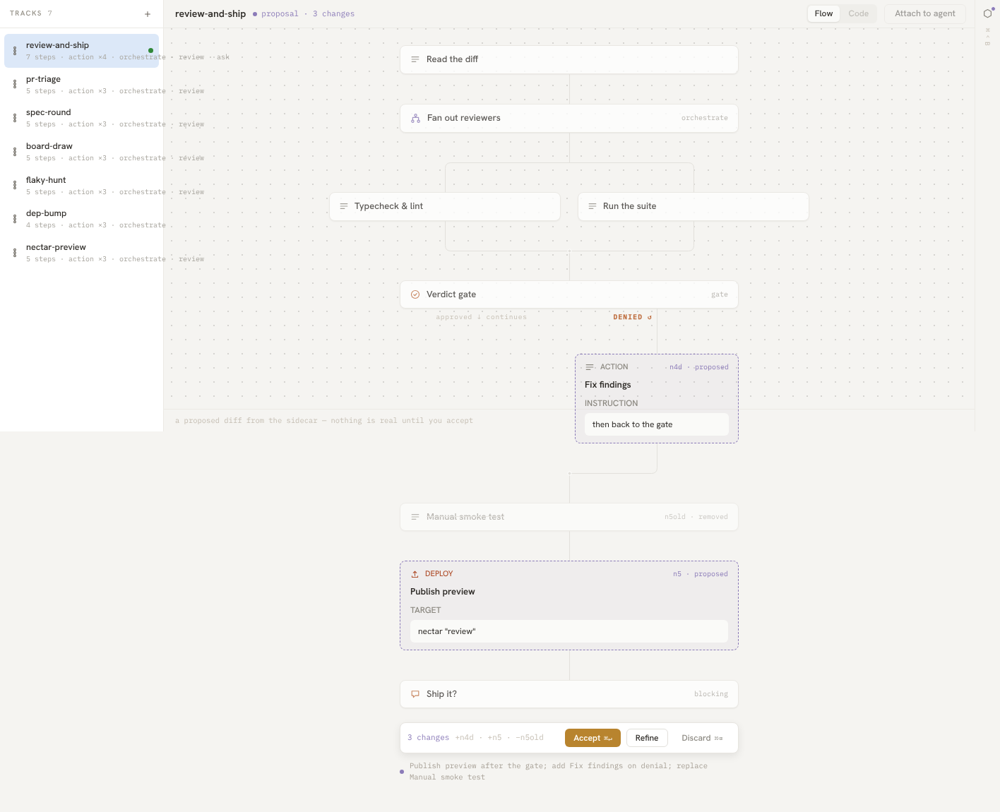

Real Classic Tracks capture at a 1416×720 viewport. The pane is 1416×611. Overflow is revealed only for this diagnostic image; the original DOM boxes and screenshot were measured first. This is diagnostic paint and may reflow content.

All existing R2 matches and raw findings remain an exact prefix. New off-screen raw measurements are appended. The old list design does not model intentional Flow View clipping, so extra graph candidates are shown explicitly.
| State | Product candidates before | After | Added |
|---|---|---|---|
| Selected | 24 | 28 | 4 clipped graph subtrees |
| Proposal | 24 | 30 | 5 graph/copy subtrees + 1 action bar |
| Empty | 20 | 20 | 0 |
Proposal defects before · Proposal defects after · All results · Original 14 rows: byte equality · 15 controlled cases · 43 focused tests
Legacy limitation: captures without visibility facts have JSON-only offscreen-unavailable coverage. Existing legacy verdicts and gates gain no off-screen coverage. All off-screen claims here use fresh recaptured pairs.